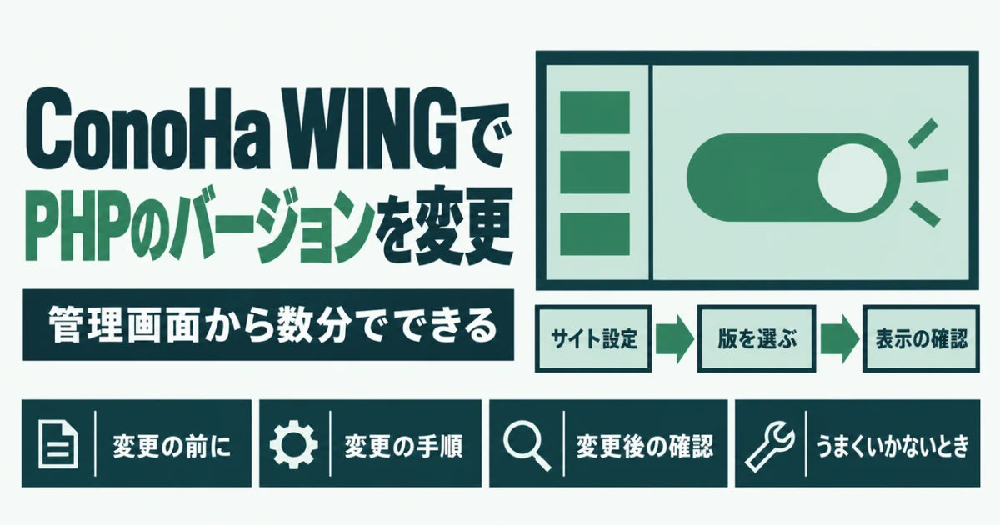
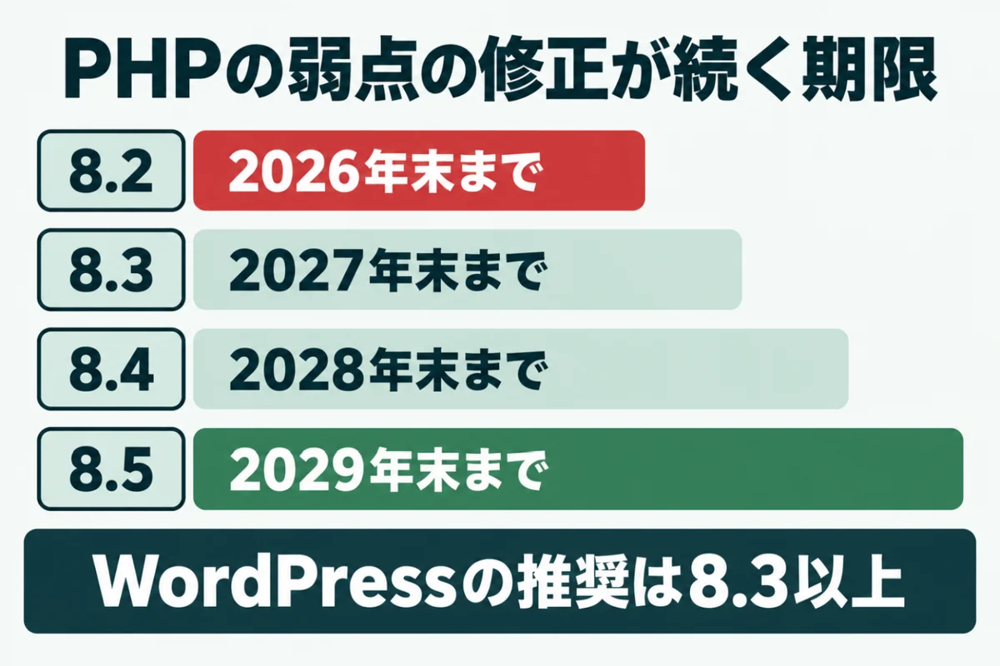
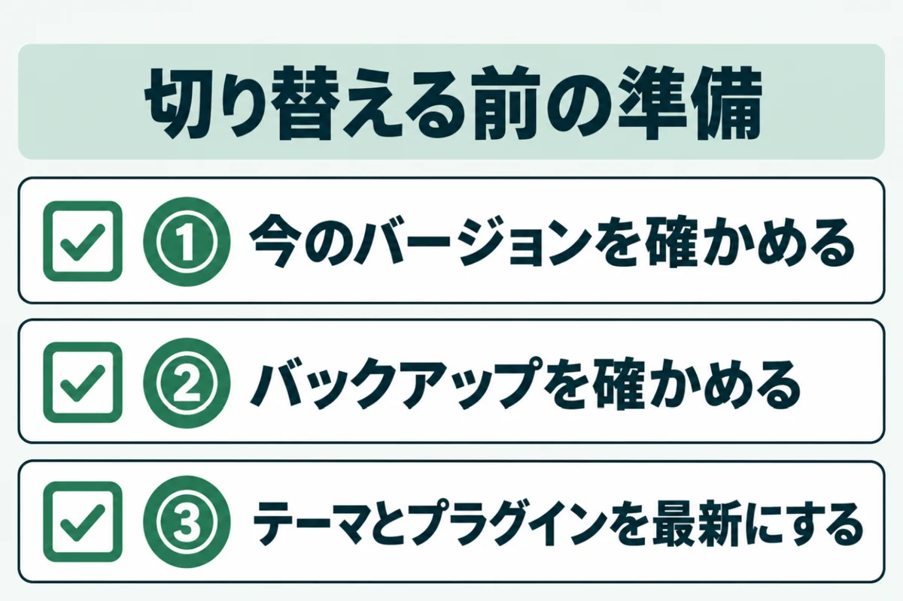
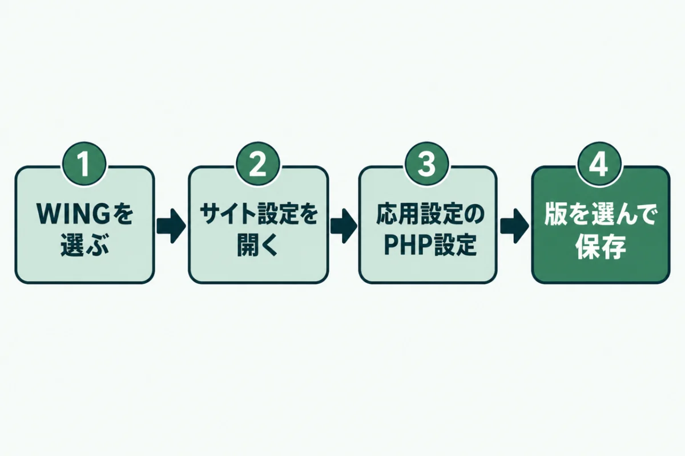
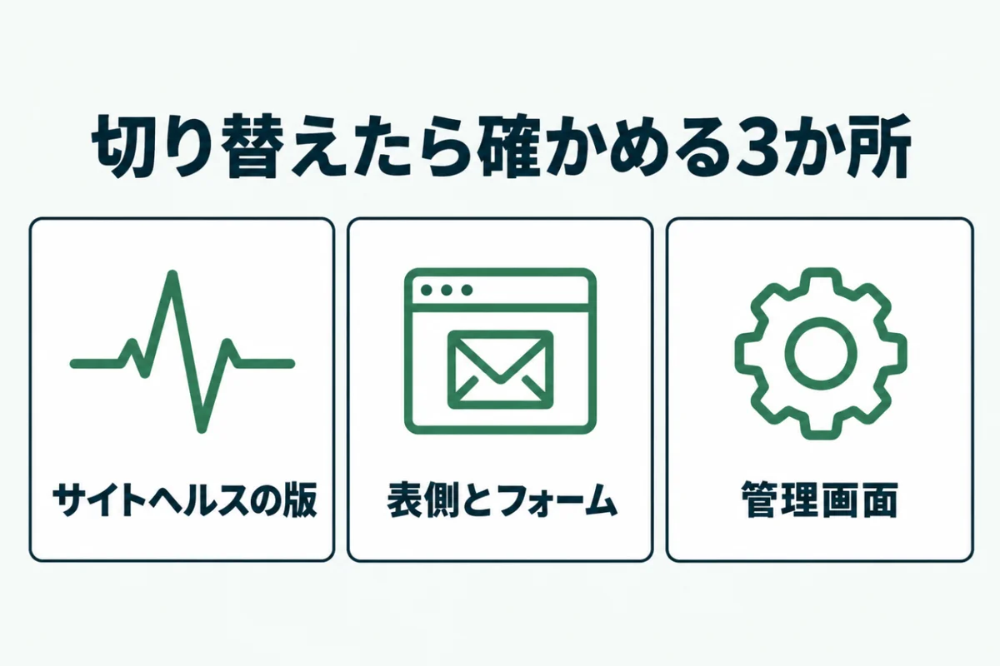
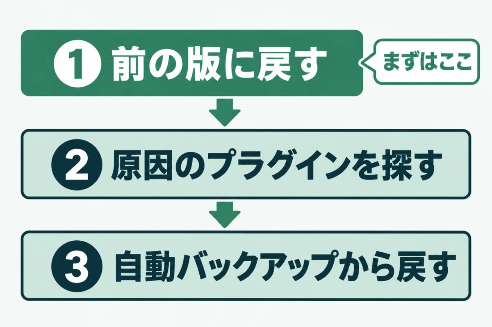

ConoHa WINGでPHPのバージョンを変更する方法事前の準備と戻し方

「ConoHa WINGのPHPを上げたいけれど、サイトが崩れたら困る」と迷っていませんか？
PHPの切り替え自体は、管理画面から数分で終わります。ただし、準備をせずに切り替えると、古いプラグインが動かなくなるおそれがあるのです。
この記事では、ConoHa WINGでPHPのバージョンを変更する方法を、準備から順に紹介します。うまくいかなかったときの戻し方もまとめました。
運営者が自社サイトでPHPを上げたときに起きたことと、その直し方も入れています。作業の前に一度通して読んでおくと安心です。
ConoHa WINGでPHPのバージョンを変更する前に知っておきたいこと

ConoHa WINGでPHPを変更する前に、どのバージョンを選べばよいかを決めておきましょう。あわせて、設定がどの範囲に効くのかも知っておくと迷いません。
古い版のまま使い続けると、弱点が見つかっても直されなくなります。2つの点を順に確かめてください。どちらも、切り替えの手順そのものより先に押さえておきたい点です。
PHPのサポート期限と推奨されるバージョン
PHPは、公開から2年は通常のサポート、その後の2年は弱点の修正だけが続く仕組みです。php.netによると、PHP 8.2の弱点の修正は2026年12月31日で終わります。WordPressの公式サイトが推奨しているのも、PHP 8.3以上です。
今から選ぶなら、8.3以上の版にしておくと、しばらく切り替えずに済むでしょう。テーマやプラグインが対応していれば、8.4を選ぶ方法もあります。サポート終了の意味は、PHPのサポート終了とは？放置の危険と確認・更新の手順｜8.2は2026年末で終了で紹介しました。
設定はドメインごとに決まる
ConoHa WINGのPHPは、初期状態ではサーバー全体で共通の設定が使われる仕組みです。公式マニュアルによると、バージョンはドメインごとにも変えられます。ドメインごとに設定すると、サーバー共通の設定よりも優先されるのです。
複数のサイトを1つの契約で動かしている場合は、サイトごとに版を確かめてください。1つだけ上げたつもりでも、ほかのサイトが古いままのことがあります。管理画面で、ドメインを切り替えながら1つずつ見ていくのが確実です。
ConoHa WINGでPHPのバージョンを変更する前の3つの準備

ConoHa WINGでPHPのバージョンを変更する前に、3つの準備を済ませておくと安心です。切り替えそのものは数分で終わりますが、準備を飛ばすと戻す手間が大きくなります。
どれも管理画面の操作だけでできるので、順に進めていきましょう。特に、テーマやプラグインが古いまま何年もたっているサイトは、念入りに確かめてください。
① 今のPHPのバージョンを確かめる
まず、今のPHPのバージョンを確かめておきましょう。ConoHa WINGでは、PHP設定の画面の「PHPバージョン」欄に今の版が表示される仕組みです。WordPressなら、「ツール」の「サイトヘルス」にある「情報」タブでも見られます。
今の版を控えておくと、戻すときに迷いません。外からの点検では、サーバーが返す情報から版が分かる場合もあります。版が外から見えている状態は、それ自体が攻撃の手がかりになるので注意が必要です。
② バックアップを確かめる
ConoHa WINGには、無料の自動バックアップが全プランに付いています。公式サイトによると、1日1回取得され、過去14日分のデータから戻せる仕組みです。
切り替えの直前に、管理画面のバックアップの一覧で、前日分があるかを見ておきましょう。念のため、WordPressのファイルとデータベースを手元にも保存しておくとさらに安心です。手元の控えがあれば、14日より前の状態にも戻せるようになります。
③ テーマとプラグインを最新にする
古いテーマやプラグインは、新しいPHPに対応していないことがあります。切り替えの前に、WordPressの本体とテーマ、プラグインを最新にしておいてください。配布ページで「PHPの必要バージョン」や「検証済み」の表示を見ると、対応の目安になるでしょう。
何年も更新されていないプラグインは、この機会に置き換えを考えましょう。使っていないものは、停止ではなく削除まで済ませておくと安心です。テーマを自作したり改造したりしている場合は、作った人に対応を確かめておきましょう。
ConoHa WINGでPHPのバージョンを変更する手順

ConoHa WINGでPHPを変更する作業は、コントロールパネルのサイト設定から行います。公式マニュアルの手順に沿って、画面の名前もそのまま載せました。画面の配置は変わることがあるので、見つからないときは公式マニュアルも見てください。
操作そのものは、慣れていなくてもすぐに終わるでしょう。作業は、サイトを見る人が少ない時間帯に行うと安心です。
PHP設定の画面を開く
コントロールパネルにログインし、上部の「WING」を選びます。左のメニューで「サイト管理」を開き、続けて「サイト設定」を選んでください。画面上部のタブを「応用設定」に切り替え、「PHP設定」を開きます。
「PHPバージョン」の欄に、今の版が表示されているはずです。対象のドメインが選ばれているかも確かめましょう。複数のサイトがある場合は、ここを間違えると別のサイトの版が変わってしまいます。画面の名前が見当たらないときは、公式マニュアルの最新の画面で確かめてください。
PHPのバージョンを選んで保存する
「PHPバージョン」の右にある鉛筆のアイコンの「編集」を押します。一覧から使いたい版を選び、「保存」を押せば切り替えは完了です。一度に大きく上げるのが不安なら、1つずつ版を上げて表示を確かめる方法もあります。
例えば7.4から8.3へ上げる場合は、8.0、8.1と順に試すと原因を絞り込みやすいでしょう。選んだ版と日時は、作業の記録として控えておいてください。他社の手順は、エックスサーバーでPHPのバージョンを上げる手順と事前チェックにまとめました。
.htaccessに足される記述は消さない
ドメインごとに版を変えると、.htaccessというファイルに記述が足されます。公式マニュアルによると、足されるのは「AddHandler」で始まる行です。この行を消すと、設定がかみ合わなくなるおそれがあります。
.htaccessをほかの目的で編集するときは、この行を残したまま書き足してください。プラグインが.htaccessを書き換えることもあるので、切り替えの後に中身を見ておくと安心です。
ConoHa WINGでPHPのバージョンを変更したあとの確認

ConoHa WINGでPHPのバージョンを変更したら、すぐにサイトの表示を確かめることが大切です。問題があっても、気づくのが早ければ前の版に戻すだけで済みます。見る場所は、版の表示とサイトの表側、管理画面の3つです。
次の順で確かめてください。お客さまが見るページだけでなく、問い合わせフォームの送信も忘れずに試しましょう。
サイトヘルスでバージョンを確かめる
WordPressの管理画面で「ツール」から「サイトヘルス」を開きます。「情報」タブの「サーバー」の欄に、いま動いているPHPの版が表示されるはずです。選んだ版と同じ数字になっているかを見てください。
違う版のままなら、別のドメインの設定を変えていないかを確かめましょう。サイトヘルスの「状態」タブに、新しい問題が出ていないかもあわせて見ておくと安心です。表示が変わらないときは、ブラウザを再読み込みしてからもう一度開きましょう。
表側と管理画面の表示を確かめる
トップページや主な記事、問い合わせフォームを開き、表示や動きがおかしくないかを見ます。管理画面も、投稿の編集やよく使う設定の画面を開いておきましょう。
運営者は自社サイトでPHPを上げたとき、前後で全ページの表示を比べて確かめました。ページ数が多いサイトでも、主なページだけは切り替えの前に開いておくと比べやすいでしょう。スマホでも、主なページを開いて崩れがないかを見ておくと安心です。フォームは、テストの送信を1回行い、メールが届くかまで確かめてください。
ConoHa WINGでPHPのバージョンを変更してうまくいかないとき

PHPを上げて表示が崩れても、前の版に戻せば元どおりになることがほとんどです。画面が真っ白になったり、エラーの文が出たりしても、データが消えたわけではありません。
原因を突き止めてから上げ直せば、新しい版で使い続けられます。戻す、原因を探す、バックアップから戻すの順で考えてください。焦って何度も切り替えるより、1つずつ確かめるほうが早く片づくでしょう。
前のバージョンに戻す
表示がおかしいと気づいたら、まずPHP設定の画面で前の版を選び直して保存します。迷ったら、すぐ前の版に戻すのが最も早い対処です。戻したら、サイトヘルスで版が戻ったことと、表示が元どおりかを確かめてください。
戻しただけでは古い版のままなので、原因を探して上げ直す準備を進めましょう。PHP 8.2のサポートが終わる年末までには、上げ直しを済ませておくと安心です。戻す操作も、切り替えと同じ「編集」から行えます。
原因のプラグインを探して入れ替える
よくある原因は、新しいPHPに対応していない古いテーマやプラグインです。運営者の自社サイト（別のサーバー）でも、PHPを8.3に上げたら管理画面にエラーが出ました。原因は、何年も更新していなかったプラグインでした。
新しい版のプラグインに入れ替えたところ、エラーは出なくなっています。プラグインを1つずつ停止して表示を見ると、原因を絞り込めるでしょう。原因が分かったら、そのプラグインの更新か、同じ機能の別のものへの置き換えを考えます。
自動バックアップから戻す
前の版に戻しても直らないときは、ConoHa WINGの自動バックアップを使います。戻したデータは、「backup_data_web」というフォルダに置かれる仕組みです。そこから必要なファイルを、ファイルマネージャーやFTPで元の場所へ移します。
戻したファイルは24時間で消えるので、早めに作業してください。大きなサイトの場合は、無理せず専門家に頼むのも1つの方法です。公式マニュアルでは、1週間に5回以上戻すと、しばらく使えなくなる場合があるとされています。
URLを入れるだけで、PHPやWordPressの版、ログイン名など8項目を無料で判定します。登録はいりません。
無料で診断するConoHa WINGのPHPバージョンに関するよくある質問
PHPのバージョンを変えると、サイトは止まりますか？
切り替えは管理画面で保存するだけで、サイトを止める操作はいりません。ただし、テーマやプラグインが新しい版に対応していないと、表示が崩れることがあります。切り替えは、見る人の少ない時間帯に行うと安心です。崩れたら、すぐに前の版へ戻しましょう。前の版に戻せば、表示は元どおりになることがほとんどです。戻したあとで原因を探し、落ち着いて上げ直せば十分でしょう。
どのPHPのバージョンを選べばいいですか？
WordPressの公式サイトは、PHP 8.3以上を推奨しています。8.2は2026年12月31日で弱点の修正が終わるので、今から選ぶなら8.3以上が目安です。テーマやプラグインが対応していれば、8.4を選ぶ方法もあります。迷ったら、使っているテーマの配布元の案内を確かめてください。プラグインの配布ページで、対応している版を確かめるのも1つの方法です。
WordPress以外のサイトでも、同じ手順で変えられますか？
PHP設定の画面は、WordPressを使っているかどうかに関係なく使えます。WordPress以外ではサイトヘルスがないため、版はPHP設定の画面で確かめるのが確実です。独自に作られたサイトは、古い書き方のプログラムが動かなくなることがあります。制作した会社に、新しい版で動くかを先に確かめておきましょう。
複数のサイトがある場合、まとめて変えられますか？
サーバー共通の設定を変えると、ドメインごとに設定していないサイトにまとめて効きます。ただし、ドメインごとに版を決めているサイトには、その設定が優先される仕組みです。一度に全部のサイトを変えると、どのサイトで問題が起きたか分かりにくくなります。1つずつ切り替えて、表示を確かめながら進めるのがおすすめです。
自分で切り替えるのが不安なときはどうすればいいですか？
制作会社や保守を頼んでいる会社に、今の版と使っているプラグインを伝えて相談するのが確実です。今の状態が分からなければ、サイトドックの無料簡易診断で、PHPの版などを外から確かめられるでしょう。切り替えの作業そのものを任せたい場合は、有料の対策作業でも承っています。一人で悩まず、早めに相談してください。
まとめ
ConoHa WINGでは、「応用設定」のPHP設定から、ドメインごとに版を変えられます。切り替えの前に、今の版の控え、バックアップ、テーマとプラグインの更新を済ませておきましょう。
切り替えたら、サイトヘルスと表示を確かめ、崩れたら前の版に戻してください。
8.2は2026年末で弱点の修正が終わるので、年内に8.3以上へ上げておくことをおすすめします。
まずは、今の状態を知るところから。
URLを入れるだけで、数十秒で判定が出ます。登録はいりません。